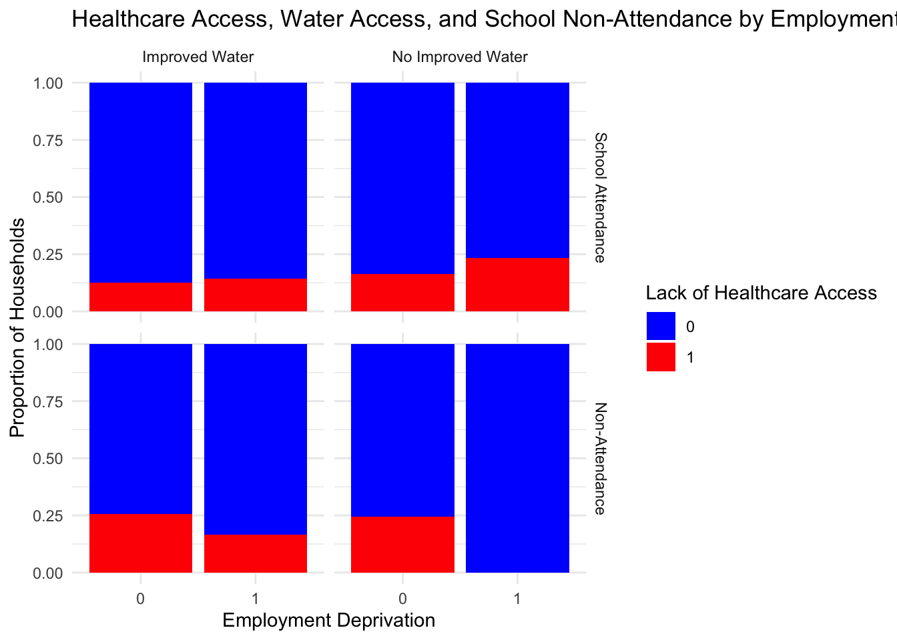

Research proposal
Research Question and Background
The Multidimensional Poverty Index (MPI) provides a more comprehensive view of poverty by evaluating deprivations across multiple dimensions rather than relying exclusively on income (UNDP, 2021).Paraguay presents a unique case study for multidimensional poverty analysis due to its high levels of informality in employment and persistent regional disparities (World Bank, 2020). The COVID-19 pandemic likely reshaped the structure of poverty, exacerbating vulnerabilities beyond income loss. While immediate economic relief efforts sought to address rising unemployment, they may not have fully mitigated the long-term effects of the crisis on education, healthcare access, and household resilience. Also as I’ve been looking, not much research in the area of multi dimensional poverty has been done in Paraguay, so this project will add some new insights regarding this.
Research Question
How has the structure of multidimensional poverty evolved in Paraguay from 2016 to 2023, and what role did the COVID-19 pandemic play in altering poverty dynamics across income groups and regions?
Understanding the evolution of poverty composition is crucial for designing effective post-pandemic social policies. This research will assess whether COVID-19 created new forms of vulnerability, disproportionately affecting certain demographics (urban vs. rural), employment groups (formal vs. informal), and social sectors (education, health, employment).
Hypothesis
I hypothesize that the COVID-19 pandemic altered the structure of multidimensional poverty in Paraguay, increasing deprivations in health, education, and employment at a greater rate than in previous years. Specifically, I predict:
- The pandemic caused a structural shift in multidimensional poverty, increasing deprivations in health, education, and employment more than in prior years.
- Post-pandemic poverty reduction was slower in rural areas and among informal workers due to weaker government intervention and labor market recovery.
The logic behind this is based on economic vulnerability theories, which suggest that households without formal job contracts or social protections are less resilient to economic shocks (Banerjee & Duflo, 2011). Given Paraguay’s high informal employment rate, I expect that government relief programs failed to fully mitigate the pandemic’s negative effects, leading to long-term deprivations in multiple poverty dimensions.
Additionally, existing research on post-pandemic recovery suggests that rural and marginalized communities experience slower improvements in poverty indicators due to reduced access to digital infrastructure, healthcare, and stable employment (FAO, 2021). This study will test whether MPI reductions post-2021 were slower in rural areas compared to urban areas, confirming the widening of regional inequalities.
Data and Variables
Dataset Description
This research will utilize Multidimensional Poverty Index (MPI) datasets from 2016 to 2023 done by the National Institute of Statistics in Paraguay, covering pre-pandemic, pandemic, and post-pandemic periods. I plan to compare this too to the data sets of phone surveys during covid of the World Bank and a Geospatial map of the National Institute again.The unit of analysis is household and some key variables of teh data set of the MPI are
- Dependent Variable: MPI score (M0_26), Binary Poverty Status (multid_poor_26).
- Independent Variables:
- Economic deprivation: hh_d_destotalmax (unemployment), hh_d_no_afil (lack of pension).
- Education deprivation: hh_d_ni_noasis (school dropout).
- Health deprivation: hh_d_sin_salud (no healthcare access).
- Basic services deprivation: hh_d_agua_mejor (water access), hh_d_materialidad (housing quality).Visualization and Analysis
Healthcare Access, Water Access, and School Non-Attendance by Employment Deprivation
Interpretation of the Graph
The graph illustrates the relationship between employment deprivation, healthcare access, school non-attendance, and water access in Paraguay, revealing key patterns of multidimensional poverty. Households experiencing employment deprivation (1) tend to have higher healthcare deprivation (red), but the effect is more pronounced when combined with other deprivations such as lack of improved water access and school non-attendance. In particular, households without improved water access show slightly higher levels of healthcare deprivation, especially among those already facing employment deprivation. Similarly, households where children do not attend school (bottom row) experience greater healthcare deprivation, suggesting that education, water access, and healthcare are interlinked dimensions of poverty. These findings imply that targeted social policies should focus on households facing multiple deprivations, as improving clean water access and school retention could indirectly enhance healthcare access. Further analysis through logistic regression could help quantify the impact of each factor, while regional breakdowns could highlight geographic disparities in deprivation.
Regression Model
To test the hypothesis that COVID-19 altered multidimensional poverty, we estimate the following regression model:
\[ MPI_{it} = \beta_0 + \beta_1 \text{Post-COVID}_t + \beta_2 \text{Unemployment}_{it} + \beta_3 \text{SchoolDropout}_{it} + \beta_4 \text{HealthDepriv}_{it} + \varepsilon_{it} \]
This model allows us to determine whether multidimensional poverty increased significantly after COVID-19 while controlling for key socioeconomic factors.”Post covid” will be a s a binary indicator variable that represents whether the data point is from before or after the COVID-19 pandemic:
# Run regression model
#model <- lm(M0_26 ~ Post_COVID + hh_d_destotalmax + hh_d_ni_noasis + hh_d_sin_salud, data = df)